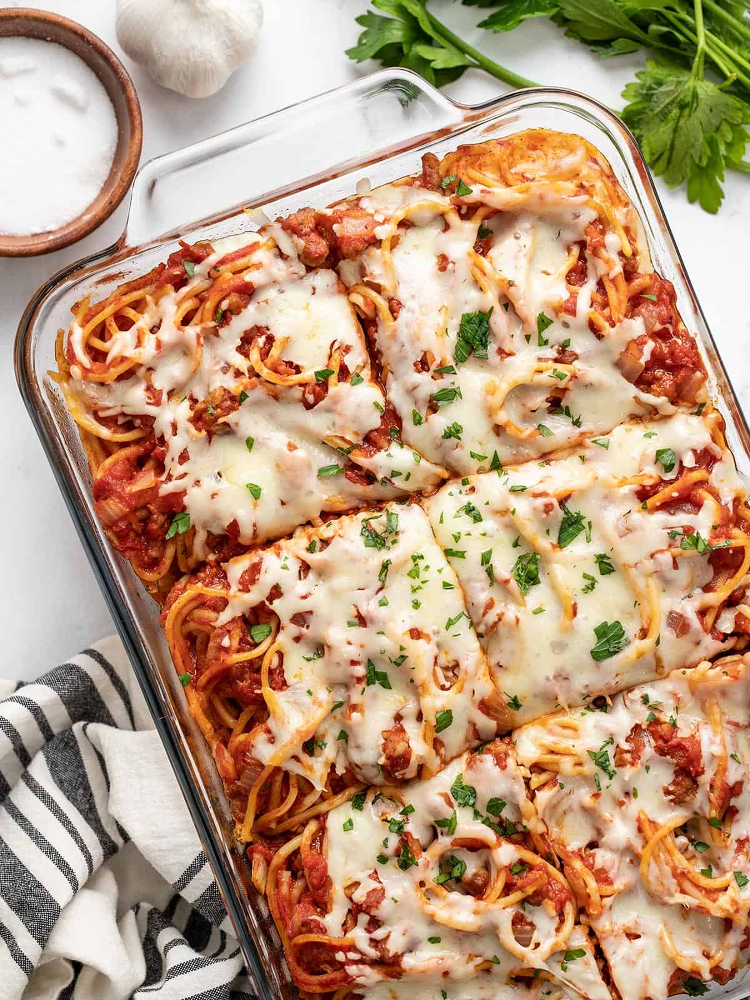

Baked Spaghetti

How to make baked spaghetti
Comforting baked spaghetti recipe with plenty of melted cheese — the perfect dish for potlucks, family gatherings, or a weeknight dinner. Baked spaghetti is the easy, comforting, and crowd-pleasing dinner you're looking for. You'll find a detailed ingredient list and step-by-step instructions in the recipe below
Ingredients
- Noodles
- Beef
- Onion
- Sauce
- Salt
- Eggs
- Cheeses:
- Parmesan
- Mozzarella
- Cottage Cheese
- Butter
Steps:
- Boil and drain the spaghetti.
- Cook the beef and onion together, then drain off the excess oil.
- Add the sauce and salt. Whisk the eggs, Parmesan, and butter in a separate bowl.
- Toss the spaghetti in the Parmesan mixture.
- Layer the ingredients in a prepared baking dish according to the detailed recipe.
- Cover and bake for 40 minutes. Sprinkle with mozzarella, then keep baking until the cheese is melted.